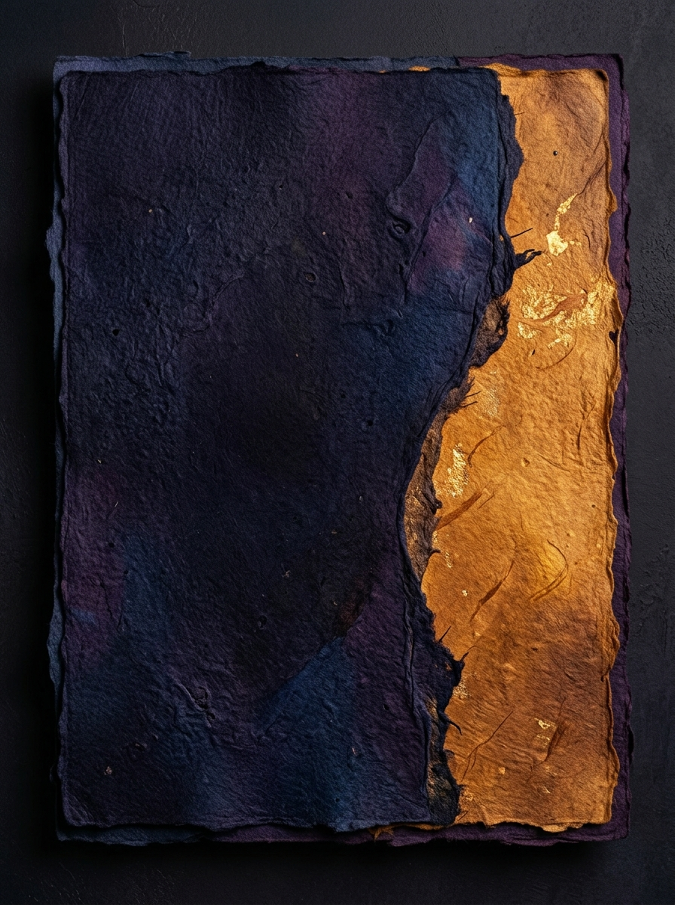

VocabFlow ile yeni kelimeler öğrenin, akıllı tekrarlar ve makalelerle kelime dağarcığınızı geliştirin.
Yapay zekanın sizin için her gün seçtiği özel kelimeleri tek tıkla kütüphanenize ekleyin.
Her gün kelime çalışmanız için bildirim zamanını ayarlayın.
Bugüne özel 15 kelime hedefi

Testleri çözerek günlük hedefinize adım adım ulaşın.
dayanıklı, dirençli
"She is a resilient person who bounces back from challenges."
148
Kelime Listesi
7
Gün Seri 🔥
/rɪˈzɪliənt/
Doğru Türkçe Karşılığını Seçin
7 Gün
Karma Tekrar Serisi
148 Kelime
Kütüphane Büyüklüğü
%94 Başarı
Test Doğruluk Oranı
2.4 sn
Ortalama Cevap Süresi
4 test boyunca doğru bilinenler öğrenildi sayılır
Tam Öğrenildi
2 kelime (≥4 Doğru)
Öğreniliyor
2 kelime
Yeni Eklenen
1 kelime
Son 7 günlük ortalama doğruluk oranı
Çalışmak istediğiniz hedef dili seçin. AI önerileri ve seslendirmeler bu dile göre güncellenir.
Açık Mod
Koyu veya Açık temaya geçin
Expand your vocabulary with engaging stories and articles.
NASA's premier observatory...
2 dk okuma 204 kelimeMakaleyi tamamladın! Metni ne kadar iyi kavradığını test etmek için başla.
💡 Hızlı Öneriler:
/rɪˈzɪliənt/
dayanıklı, dirençli
Örnek Cümleler
/rɪˈzɪliənt/
dayanıklı, dirençli